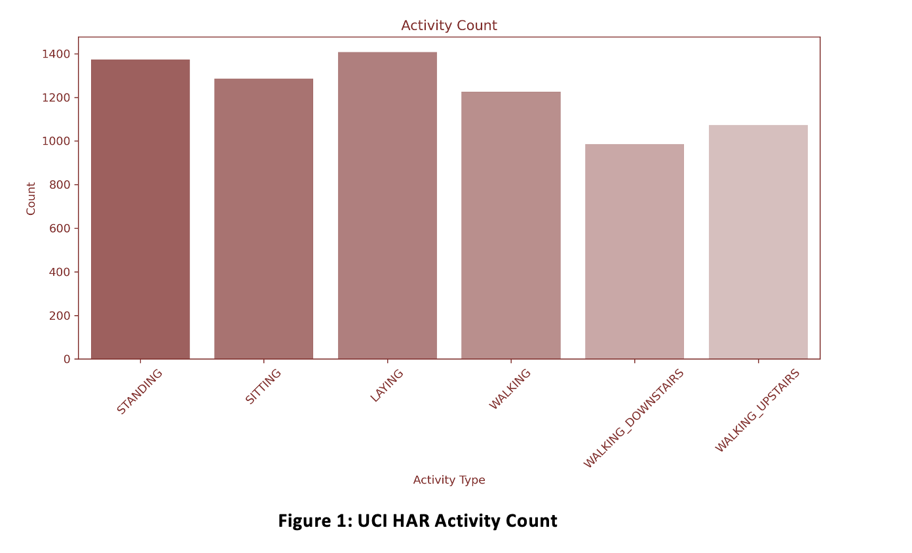
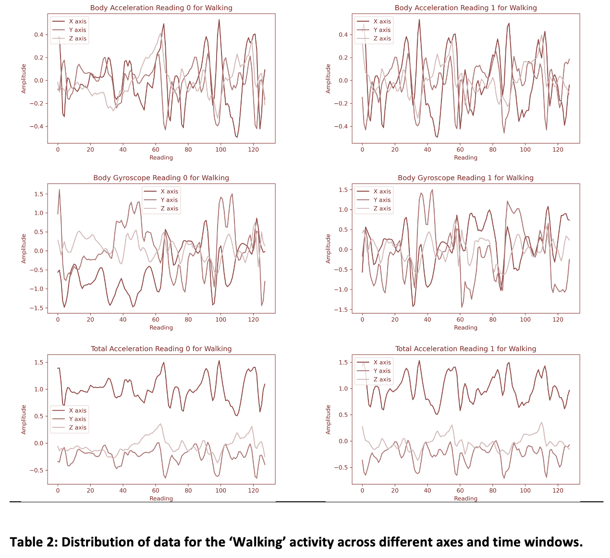
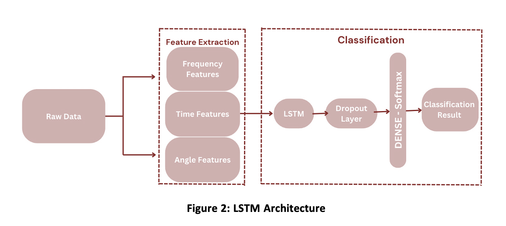

Human Activity Recognition - Neutral Network and Deep Learning Project
Introduction
Humans have a natural ability to understand information conveyed through body movements, gestures, and postures. We can effortlessly track and interpret human motions, interactions, and even intentions. This complex recognition, processed almost subconsciously by our brain, is a result of the visual inputs we receive. Machines, in contrast, are still developing the ability to recognize human activities. We guide this learning process, drawing from our understanding of these tasks. Consider that just sixty years ago, computers were primarily used as simple calculators. Since then, advancements in Machine Learning (ML), a subset of Artificial Intelligence (AI), have significantly enhanced their ability to interpret and respond to various situations, mimicking human-like understanding. Research in Human Activity Recognition (HAR) began in the early 1980s, but the most substantial advancements have occurred in the last two decades. These breakthroughs can be attributed to improvements in microelectronics, sensor technology, and computer systems. These technological advances enable the collection of more detailed data from human movements.
About the Data
Amongst the most renowned HAR datasets, one is hosted by the University of California Irvine (UCI) in their Machine Learning Repository, which is commonly known as the UCI HAR dataset. Human Activity Recognition database is built from the recordings of 30 subjects performing activities of daily living (ADL) while carrying a waist-mounted smartphone with embedded inertial sensors. The experiments have been carried out with a group of 30 volunteers within an age bracket of 19-48 years. Each person performed six activities (WALKING, WALKING_UPSTAIRS, WALKING_DOWNSTAIRS, SITTING, STANDING, LAYING) wearing a smartphone (Sam- sung Galaxy S II) on the waist. Using its embedded accelerometer and gyroscope, we captured 3-axial linear acceleration and 3-axial angular velocity at a constant rate of 50Hz. The experiments have been video-recorded to label the data manually.

Analysis
The data is split into training and test sets where 70% of the volunteers were selected for generating the training data and 30% the test data. The sensor signals (accelerometer and gyroscope) were pre-processed by applying noise filters and then sampled in fixed-width sliding windows of 2.56 sec and 50% overlap (128 readings/window). The sensor acceleration signal, which has gravitational and body motion components, was separated using a Butterworth low-pass filter into body acceleration and gravity. The gravitational force is assumed to have only low-frequency components; therefore, a filter with 0.3 Hz cutoff frequency was used. This is already done and available at the UCI HAR dataset website. The preprocessed dataset contains 561 features, which are the result of the pre-processing of the raw data. The features are normalized and bounded within [-1,1]. Each feature vector is a row on the text file. This dataset will be used for our LSTM Model while the feature engineered raw data will be used for our CNN Model.
Exploratory Data Analysis
The raw dataset has feature vectors representing each window. We wanted to see how dif- ferent is the data across all the axes for different activities and also among the activities for consecutive time windows. 2 activities were chosen for this analysis, namely, Walking and Standing. The following plots show the distribution of the data across all the axes for these 2 activities.

The plots show that the data is very different across the axes and also across the time windows. This shows that the data is very dynamic and the features extracted from this data will be very useful in classifying the activities.
Feature Engineering
The t-SNE graph of our raw dataset shows the distribution of different classes on a two- dimensional plane. We observe that samples from four distinct classes are grouped closely together, which is not ideal for effective classification.
Frequency Features
Human actions can be represented as combinations of sinusoidal signals with varying frequen- cies. We refer to the frequency information as the values and amplitudes of these signals at different frequencies. To extract this information, we use the Fast Fourier Transform (FFT), an algorithm developed in 1965 by James Cooley and John Tukey. It’s a quicker version of the Discrete Cosine Transform (DFT) for calculating the frequency components of time-domain signals. Applying FFT to our dataset, the t-SNE graph shows improved clustering of similar classes and better separation of different classes, enhancing the ease of classification.
Power Features
The power spectrum of a signal shows how power is distributed across various frequencies. We use the pwelch algorithm for Welch’s power spectral density estimate, which calculates power using overlapping data segments and a windowing technique. This method, developed by P.D. Welch in 1967, enhances control over resolution and reduces variance in the estimation. The t-SNE graph of power-featured signals shows distinct class separations. Despite the distinctions in the t-SNE graphs based on frequency and power features, some overlap of different classes remains in both cases. Therefore, utilizing both sets of features could lead to more accurate identification of the unique properties of the samples.
Modeling
Long Short Term Memory (LSTM)
LSTM is a type of Recurrent Neural Network (RNN) that can learn long-term dependencies. It is a special kind of RNN, capable of learning long-term dependencies. It was introduced by Hochreiter and Schmidhuber in 1997. The dataset is primarily a time series dataset because each data point is a 2.56-second window containing 128 readings. We initially developed a basic LSTM model with 50 hidden units and included a 0.2 dropout rate to prevent overfitting. Although this model performed well, it didn’t yield the most promising results. To improve it, we applied GridSearch CV for hyperparameter tuning. This process helped us identify the optimal settings: 150 hidden units and a 0.3 dropout rate, using the Adam Optimizer.

Two channel Convolutional Neural Network (CNN)
CNNs are a class of deep neural networks, most commonly applied to analyzing visual imagery. They are also known as shift invariant or space invariant artificial neural networks (SIANN), based on their shared-weights architecture and translation invariance characteristics. They have applications in image and video recognition, recommender systems, image classification, medical image analysis, and natural language processing. Now the raw data was 3 axial data for Body acceleration, Body gyroscope and Total accelera- tion. It was noticed that since the data has 3 axes namely X, Y and Z which led our shape of our data to be (10300, 384, 3). Where 10000 is the number of timesteps, 384 is 128 readings per time step multiplied by 3 different readings for Body acceleration, Body gyroscope and Total acceleration and 3 is the channels. This data shape looks awfully similar to a RGB Image which also has 3 channels, 1 for each color.
Two CNNs (specified as channels) are incorporated in the classification model; one of them will process the frequency features, and the other will work with the power features. Both the CNNs have similar architectures with 2 1 dimensional Convolutional layers of 32 units each with 2x2 Maxpooling kernels and Batch normalization. Outputs from these were flattened, concatenated and passed through a Dense layer of 128 units with a dropout rate of 0.3 and finally the output layer with softmax activation to classify into 6 activities.
Results
Both the models (LSTM and CNN) gave similar results with a high accuracy of 95% for LSTM and 96% for CNN. The training and testing accuracy and loss plots are shown below.
Conclusion
This project successfully demonstrated how deep learning can be effectively used in Human Activity Recognition (HAR), particularly through the use of LSTM and CNN models. Inter- estingly, despite their distinct architectural designs, both models achieved similar high levels of accuracy. This outcome highlights the adaptability of different machine learning approaches to complex data analysis. The study focused on the UCI HAR dataset, which comprises time-series data from smartphone sensors. The LSTM model performed very well due to its ability to process sequential data, making it well-suited for the time-dependent nature of the dataset. This was key to its high performance in recognizing patterns in human movements over time. Conversely, the CNN model leveraged the three-dimensional structure of the data, which is similar to RGB image formats, with readings from three axes. This resemblance allowed the CNN to effectively extract spatial features, leading to its impressive performance in activity classification. The project’s findings are significant as they show how different types of neural network models can be optimized to handle specific data characteristics — LSTM for time-series data and CNN for multi-dimensional data. This approach not only achieved accuracy levels above 95% but also provided valuable insights into the application of machine learning in HAR. These insights could have far-reaching implications in various fields, from healthcare to interactive technology. Overall, this research contributes to the evolving field of HAR, offering insights and tools that could be applied in various practical sc